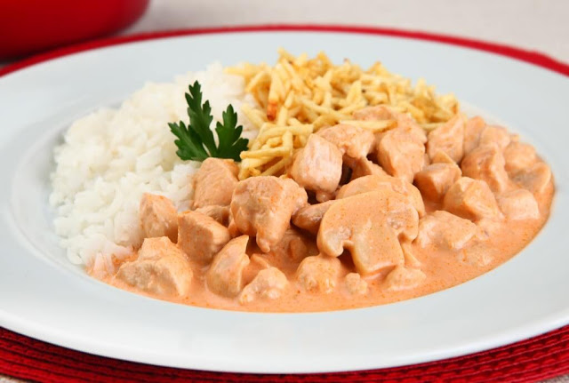

Receita de Strogonoff de Frango no capricho!

INGREDIENTES
- 3 peitos de frango cortados em cubos
- 1 dente de alho picado
- sal e pimenta a gosto
- 1 cebola picada
- 2 colheres (sopa) de maionese
- 1 colher de manteiga
- 1/2 copo de ketchup
- 1/3 copo de mostarda
- 1 copo de cogumelos
- 1 copo de creme de leite
- batata palha a gosto
MODO DE PREPARO
- Em uma panela, misture o frango, o alho, a maionese, o sal e a pimenta.
- Em uma frigideira grande, derreta a manteiga e doure a cebola.
- Junte o frango temperado até que esteja dourado.
- Adicione os cogumelos, o ketchup e a mostarda.
- Incorpore o creme de leite e retire do fogo antes de ferver.
- Sirva com arroz branco e batata palha.